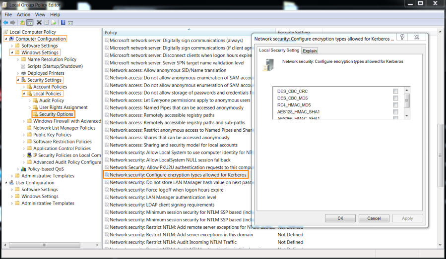

Encryption
Encryption
Kerberos to encrypt and decrypt Tickets and Authenticators uses only symmetrical key encryption (same
key is used to encrypt and decrypt).
string2keyKerberos use the
string2key hash function to transforms an
unencrypted password of a user/service/krbtgt into an
encryption key. The
encryption
key will be used as the key for an
encryption type to
encrypt Tickets and Authenticators.
string2key is a function based on the PBKDF2 algorithm(
rfc8429) that has as
input the
encryption key and a "salt".
By default a
Kerberos “salt” includes the
Client Principal Name and the name of the realm(
rfc8429).
KDC in KRB-AS-REP can override the salt with a padata parameter (PA-PW-SALT,
PA-AFS3-SALT, PA-ETYPE-INFO, PA-ETYPE-INFO2...)(
rfc4120)
example: salt=daniele@EXAMPLE.COM
EncryptionKeydaniele = string2key(UnencryptedPassworddaniele + "daniele@EXAMPLE.COM" )Encryption
Keys(secret keys)As we have seen in Kerberos Protocol we have 3
secret
keys:
•
KDC(krbtgt) secret key
→ krbtgt account's password hashed with
string2key function. krbtgt account is the
default account for the Key Distribution Center (KDC) service. The password is assigned to the krbtgt account
automatically by the system during the creation of the
KDC•
Client(user) secret key → user account's
password hashed with
string2key function•
Service secret key → service account's
password hashed with
string2key
functionEncryption TypesBy default, Kerberos will use the highest method of
encryption that is supported by the system(most secure is AES256_HMAC_SHA1).
From Windows Vista/Server 2016
all of these encryption types are supported:
• DES_CBC_CRC → disabled by default in Vista/2008
•
DES_CBC_MD5 → disabled by default in Vista/2008
• RC4_HMAC_MD5 → XP & 2003 default, as well as the
strongest encryption they support.
NT
hash of the user's password is used as key for RC4_HMAC encryption method.
RC4(also known as ARC4
or ARCFOUR) encryption ignore the salt input to the string2key function; the function itself is a single iteration
of the MD4 hash function applied to the UTF-16 encoded password, with no salt at all. Described in
rfc4757 and
rfc8429 ◇
String2Key(NThash):
return MD4(UNICODE(NThash))
• AES128_HMAC_SHA1 → introduced with Vista/2008
•
AES256_HMAC_SHA1 → default in Vista/2008 and higher
Change settingsSupported
Kerberos encryption types can be configured under the following setting(Windows 7):
Search for “Edit group
policy” in the search bar:
Computer Configuration -> Windows Settings -> Security Settings -> Local
Policies -> Security Options -> Network Security: Configure encryption types allowed for Kerberos
Bibliography:
•
https://docs.microsoft.com/en-us/windows/security/threat-protection/security-policy-settings/network-security-configure-encryption-types-allowed-for-kerberos
{kind=link}